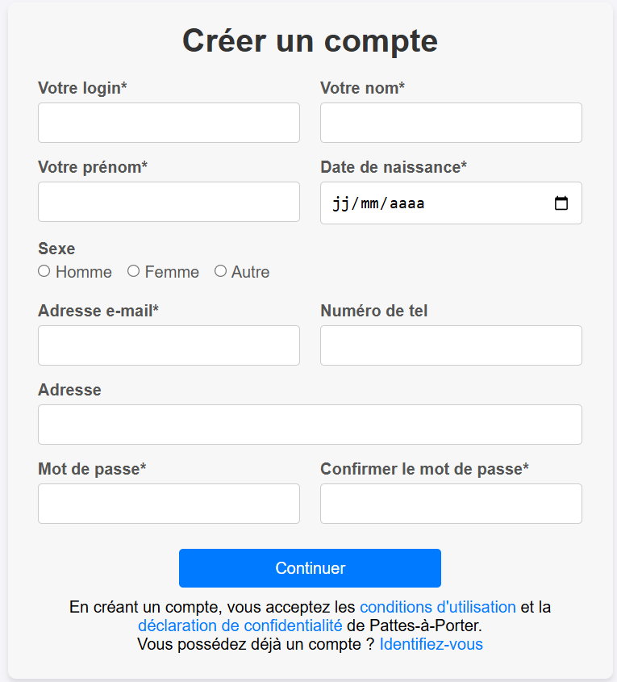
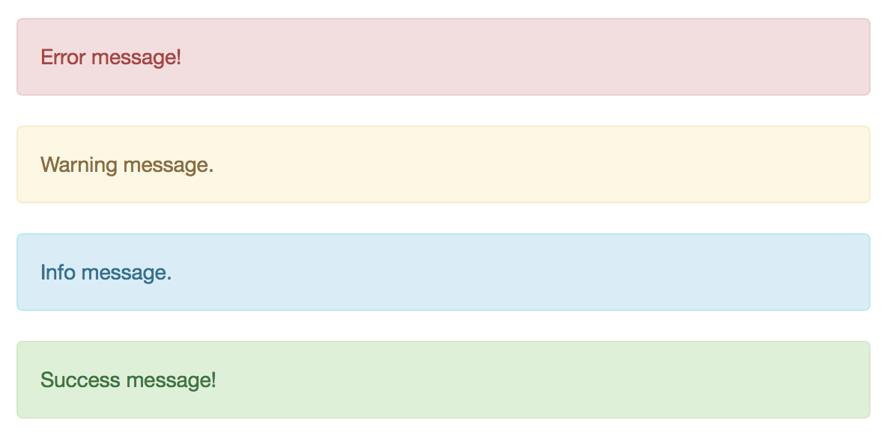

Nous avons conçu la partie Front-end de l'application pour afficher les données traitées en backend à travers des vues construites entièrement en HTML/CSS. Ces vues permettent une présentation claire et structurée des informations, tout en s'appuyant sur des principes de design inspirés des sites e-commerce. Notre objectif était de reproduire une expérience utilisateur intuitive et familière, avec des interfaces permettant une navigation fluide et une mise en valeur des éléments clés. Nous retrouvons donc des produits et leur catégorie, un panier, des commandes et des comptes.
Front-End

Enfin, nous avons intégré un système de messages flash pour améliorer l’expérience utilisateur en affichant des notifications dynamiques, comme des confirmations de succès ou des alertes d’erreur après une action. Ces messages ont permis d’établir un dialogue efficace avec l’utilisateur en lui fournissant des retours immédiats sur ses interactions.

A propos du projet
Versionning : GitLab
Equipe : 3 personnes
Communication : GoogleDocs, Discord
Outils de développement : HTML, CSS, php
Durée du projet : du 16 octobre au 23 novembre 2024, 1,5 mois